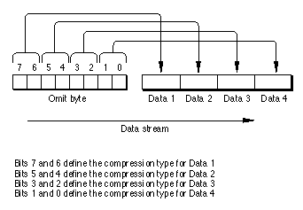
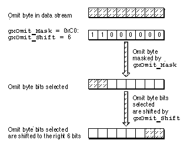
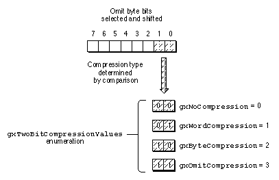
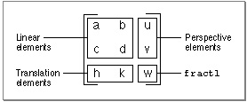

Legacy Document
Important: The information in this document is obsolete and should not be used for new development.
Important: The information in this document is obsolete and should not be used for new development.


Data
The sequence of the optional object-specific data that follows a data type opcode byte is predetermined and consists of type constants and data. Some data sequences are preceded by an omit byte. An omit byte is included in the data stream format to describe the presence or absence, meaning, order, and compression of data that corresponds to the fields of a type or the properties of an object. If an omit byte is not present for an object, then, with the exception of bitmaps and transforms, the compression type opcode in the data type opcode byte defines the data compression.Omit Byte Masks and Omit Byte Shifts
The omit byte provides an efficient method of assigning different data compressions to type constants and object properties that immediately follow the omit byte. Figure 7-7 shows the relationship of the bits in an omit byte and the four constants or properties that follow.Figure 7-7 Omit byte relationship with the data that follows

The compression type constants used in the omit byte are defined in the
gxTwoBitCompressionValuesenumeration listed in Table 7-2. Long, word, or byte data compression is applied if the enumeration constants are 0x00, 0x40, 0x80, respectively. If the constant is 0xC0, the compression is "omit compression," then the stream format does not include the field or property. For example, if the omit byte in Figure 7-7 contained 0x0C for bits 3 and 2, Data 3 constant or property would not appear in the stream and Data 4 would follow Data 2.Some omit byte enumerations provide multiple bytes of mask constants and shift constants to accommodate the description of all of the properties of an object or all of the fields of a structure. For example, the description of a layout shape requires three omit bytes to specify the compression of all of the properties. The data corresponding to each omit byte mask follows the mask. For multiple masks, the sequence is omit mask1, data, omit mask2, data, omit mask3, data, and so on.
You can use an omit byte mask and its corresponding omit byte shift to interpret the meaning of each of the bits in the omit byte. Each entry in an omit mask enumeration has a name and a value. The name describes the property. The hexadecimal value of the mask is given in the enumeration. The binary equivalent is the mask.
Table 7-10 shows a typical omit byte mask enumeration and its corresponding omit byte shift enumeration values. The example shows the
gxOmitTextMaskenumeration binary mask values and the bit shift from the correspondinggxOmitTextShiftenumeration.Figure 7-8 shows how you can use an omit mask and corresponding omit shift to analyze an omit byte in the data stream.
Figure 7-8 Select the bits from the omit byte

First, the bits in the omit byte are masked with the
gxOmit_Maskenumeration with a value of 0xC0 and a binary value 11000000. This mask selects the first two high-order bits of the omit byte. In order to interpret the two bits selected, shift the bits to the right by the number of bits indicated by thegxOmit_Shiftenumeration value. Once the bits are selected and shifted, determine the compression of the data that follows by comparing these bits with thegxTwoBitCompressionValuesenumeration, as shown in Figure 7-9. The values of thegxTwoBitCompressionValuesenumeration are given in Table 7-2.Figure 7-9 Compare the bits selected and shifted with the compression enumeration

Here is an example of how this works with an omit byte describing the shape object for a text shape. First you need to correlate the names of the constants in the omit mask enumeration with the structures, enumerations, or properties of the object that they describe. For more information on correlating omit bytes, see the appropriate object-specific heading in the section"Data" beginning on page 7-22.
Table 7-11 shows the correlation between the
gxOmitTextMasknames and the parameters of theGXNewTextFunction.A summary of these constants is provided in Table 7-10. The
gxOmitTextMaskenumeration constants correlate with the properties of the text shape. The text shape is described in the text shape chapter of Inside Macintosh: QuickDraw GX Typography.The order of the
gxOmitTextMaskenumeration tells us that the data to follow will be in the sequencecharCount,position.x,position.y, andtext.For instance, suppose the omit byte is 0xA4 or binary 10100100.
The binary mask value for the
gxOmitTextCharacterMask, 11000000, selects the high order 2 bits, 10. ThegxTwoBitCompressionValuesenumeration with value 2 isgxByteCompression. The data forcharCountis therefore byte compressed.The binary mask value for the
gxOmitPositionXMask, 00110000, selects the next 2 bits, 10. ThegxTwoBitCompressionValuesenumeration with value 2 is againgxByteCompression. The data forposition.xis therefore byte compressed.The binary mask value for the
gxOmitPositionYMask, 00001100, selects the next 2 bits, 01. ThegxTwoBitCompressionValuesenumeration with value 1 isgxWordCompression. The data forposition.yis therefore word compressed.The binary mask value for the
gxOmitTextDataMask, 10, selects the next bit, 0. ThegxTwoBitCompressionValuesenumeration with value 0 isgxNoCompression. Thetextdata is therefore not compressed.The above example is from the analysis of a data stream of a flattened text shape. For additional information about this example see the section "Analyzing a Flattened Text Shape" beginning on page 7-72.
One or more omit mask bytes are included in the data stream whenever specific enumeration or structure data is required to describe a specific object.
Omit mask and omit shift enumerations can be used to analyze QuickDraw GX omit bytes and compare the masked bits to other values.
An omit byte is first masked to obtain the bits desired. The bits are then shifted using the omit shift enumeration that corresponds to the omit byte. The resulting bits can then be compared to other data in your application to obtain information about the data stream.
Listing 7-1 shows how to determine if the x-coordinate of the position field in a flattened shape data stream is compressed.
Listing 7-1 Determining if
position(x)is byte compressed
unsigned char a = ReadByte(); if ((a & (gxOmitTextPositionXMask >> gxOmitTextPositionXShift)) == gxByteCompression { /* perform an action */ }The function reads the byte, masks it withgxOmitTextPositionXMaskto obtain the desired two bits, and then shifts it by the amount given by thegxOmitTextPositionShift. The resulting 2 bits can now be compared to the 2 bits ofgxByteCompression.Header Data
The header marks the beginning of a new flattened shape in the data stream. ThegxHeaderTypeOpcodeconstant indicates that the version of QuickDraw GX that generated the data stream follows. As new versions become available, older software may not be able to interpret the newer portions of a data stream. The interpreter can then look at the version number and skip over versions that it doesn't understand. For example, if an interpreter that understands only QuickDraw GX version 1.0 encounters version 2.0 or if the interpreter finds a version 1.0 opcode, but doesn't recognize the data, an error is posted.The byte after the version byte contains the
gxFontListFlattenandgxFontGlyphsFlattenflags. These flags are functional only if the shape contains text.The
gxFontListFlattenflag instructs theGXFlattenShapefunction to attach a tag object to the flattened shape containing a list of the fonts referenced in the shape. A list of all of the fonts used in the data stream are included at the end of the data stream.The
gxFontGlyphsFlattenflag instructs theGXFlattenShapefunction to attach a tag to the flattened shape containing a list of the specific glyphs used from each font referenced by the shape. A list of all of the glyph codes used by all of the fonts referenced in a data stream is then included at the end of that data stream.For more information about the font and glyph list flags, see the chapter "Shape Objects" in Inside Macintosh: QuickDraw GX Objects.
The font list and glyph list are combined to form a tag that is of type
gxFlatFontListItemand designated'flst'. During printing, only the fonts and glyphs used in the stream are loaded to the printing device.The
gxFlatFontListstructure includes thegxFlatFontListItemstructure. ThegxFlatFontListItemcontains two arrays. The first is the array of font names. The second is the array of glyphs that are used. The array of glyphs is obtained by setting a bit in an array for each glyph that is used. If you ask only for the font names, the glyph array will be omitted. The glyphs array cannot be selected without the font array selected. In other words, you may specify either a list of fonts or specify a list of fonts and glyphs to be listed at the end of the data stream.The fonts and glyphs included in the flattened list,
'flst', are used in the print file for the QuickDraw GX portable digital document. For more information on the QuickDraw GX portable digital document see the section "Portable Digital Documents" beginning on page 7-53.For more information on the QuickDraw GX print file, see the section "About Print Files and Portable Digital Documents" beginning on page 7-51. For more information about how to use the print file data, see the section "Obtaining Data From a Print File" beginning on page 7-89.
For more information on
thegxFlatFontName,gxFlatFontListItemTag, andgxFlatFontListstructures see the chapter "Fonts" in Inside Macintosh: QuickDraw GX Typography.New Shape Object Data
A new shape object always follows the style, ink, transform, and any other objects that have been built for the shape object in the data stream. New shape data follows an operation opcodegxNewObjectOpcodeconstant and a data type opcode containing one of the constants inthegxGraphicsNewOpcodeenumeration. Values 1 (gxEmptyType) through 13 (gxPictureType) are the constants from thegxShapeTypesenumeration.This opcode creates a new shape object with all of the properties of the previous shape object in the data stream. If the current shape object is the first shape object in the stream, then it is created with default properties.
The values of the constants for all of the shape objects are summarized in Table 7-3. Shape types are described in the chapter "Shape Objects" in Inside Macintosh: QuickDraw GX Objects.
Empty Shape Data
The data type opcode with a value 1 is thegxEmptyTypeconstant. Empty shapes store no information in their geometries. For the current shape object, thegxEmptyTypemeans that the current shape is an empty shape. No data follows.The
gxEmptyTypesconstant is described in the chapter "Geometric Shapes" in Inside Macintosh: QuickDraw GX Graphics.Point Shape Data
The data type opcode with a value 2 is thegxPointTypeconstant. The data for the fields of agxPointstructure follows. The data sequence isx(Fixed),y(Fixed).Compression data:
gxNoCompression- read 2longsper point;gxWordCompression- read 2 shorts per point or treat each short as a signed integer (120 = 120.0 and -171 = -171.0);gxByteCompression- read 2 bytes per point and treat each byte as a signed integer (7 = 7.0 and -13 = -13.0).The
gxPointstructure is described in the chapter "Geometric Shapes" in Inside Macintosh: QuickDraw GX Graphics.Line Shape Data
The data type opcode with a value 3 is thegxLineTypeconstant. The data for the fields of thegxLinestructure follows. The data sequence isfirst.x,first.ylast.x,last.y.Compression data:
gxNoCompression- read 2longsper point;gxWordCompression- read 2 shorts per point or treat each short as a signed integer (120 = 120.0 and -171 = -171.0);gxByteCompression- read 2 bytes per point and treat each byte as a signed integer (7 = 7.0 and -13 = -13.0).The
gxLinestructure is described in the chapter "Geometric Shapes" in Inside Macintosh: QuickDraw GX Graphics.Curve Shape Data
The data type opcode with a value 4 is thegxCurveTypeconstant. The data for the fields of thegxCurve structure follows. The fields in the structure correspond to the parameters in theGXNewCurve function. The data sequence isx(first point),y(first point),x(control point),y(control point),x(last point), andy(last point).Compression data:
gxNoCompression- read 2longsper point;gxWordCompression- read 2 shorts per point or treat each short as a signed integer (120 = 120.0 and -171 = -171.0);gxByteCompression- read 2 bytes per point and treat each byte as a signed integer (7 = 7.0 and -13 = -13.0).The
gxCurvestructure is described in the chapter "Geometric Shapes" in Inside Macintosh: QuickDraw GX Graphics.Rectangle Shape Data
The data type opcode with a value 5 is thegxRectangleTypeconstant. The data for the fields of thegxRectanglestructure follows. The data sequence is left, top, right, bottom. Typically, the first corner is left-top and the second corner is right-bottom; but this order is not required. They need only be opposite corners of a rectangle.Compression data:
gxNoCompression- read 2longsper point;gxWordCompression- read 2 shorts per point or treat each short as a signed integer (120 = 120.0 and -171 = -171.0);gxByteCompression- read 2 bytes per point and treat each byte as a signed integer (7 = 7.0 and -13 = -13.0).The
gxRectanglestructure is described in the chapter "Geometric Shapes" in Inside Macintosh: QuickDraw GX Graphics.Polygon Shape Data
The data type opcode with a value 6 is thegxPolygonTypeconstant. The data for the fields of thegxPolygonsstructure follows. ThegxPolygonsstructure includes thegxPolygonstructure.The data sequence is
contours,vectors, omit byte,x(first point),y(first point),x(second point),y(second point),x(third point),y(third point), and so on. The numbers are compressed as fixed-point numbers.The point array for polygons and paths stream is stored as relative positions, not absolute positions ( as is the case for the point arrays in polygon and path shapes.)
The omit byte is interpreted by the
gxOmitPathMaskandgxOmitPathShiftenumerations.The first two entries of the omit byte describe the compression for the first two points of the polygon shape, which are absolute. The numbers are compressed as fixed-point numbers:
gxNoCompressionmeans 1longfor each fixed number;gxWordCompressionmeans 1shortfor each fixed number treated as an integer
(17 = 17.0);gxByteCompressionmeans 1 byte per fixed number. Thus a byte compressed value can represent an integer fixed point number from -128.0 to 127.0; a word compression value can represent any integer fixed-point number.The second two entries in the omit byte describe the compression for the second through the last points in the contour. The coordinates of these points are relative to the first absolute points and appear in the stream as differences. The relative values are stored as differences. Thus each x value in the stream is subtracted from the prior value to reconstruct the original value. Conversely, each value in the shape is subtracted from the prior value to compute the delta to be written to the stream. The x and y coordinate values are considered separately. Each may be independently byte, word, or long compressed, using the same fixed-point compression as the absolute values. Each subsequent contour has its own omit byte to describe the absolute initial point values and the subsequent relative point values.
The compression bits in the data type opcode byte control the compression of the contour counts and all vector counts. Compression data:
gxNoCompression- read 1 long for contour and each vector count;gxWordCompression- read 1 word for contour count and each vector count;gxByteCompression- read 1 byte for contour count and each vector count.The
gxPolygonsstructure is described in the chapter "Geometric Shapes" in Inside Macintosh: QuickDraw GX Graphics.Path Shape Data
The data type opcode with a value 7 is thegxPathTypeconstant. The data for the fields of thegxPaths structure follows. ThegxPathsstructure includes thegxPathstructure.The data sequence is
contours(number of contours),vectors(number of points in the contour), control bytes, omit byte,x(absolute coordinate of first point),y(absolute coordinate of first point),x(relative coordinate of second point),y(relative coordinate of second point),x(relative coordinate of third point),y(relative coordinate of third point), and so on.A control byte contains control bits for each point off or on the path. Each point is assigned a bit. Bits with value 1 are off the path; bits with value 0 are on the path. If the number of points exceeds 8, multiple control bytes are used. If the number of points is not an even multiple of 8, the final unused bits are ignored.
The omit byte is interpreted by the
gxOmitPathMaskandgxOmitPathShiftenumerations.The first two entries of the omit byte describe the compression for the first two points of the path shape, which are absolute coordinates. The numbers are compressed as fixed-point numbers:
gxNoCompressionmeans 1longfor each fixed number;gxWordCompressionmeans 1shortfor each fixed number treated as an integer
(17 = 17.0);gxByteCompressionmeans 1 byte per fixed number. Thus a byte compressed value can represent an integer fixed point number from -128.0 to 127.0; a word compression value can represent any integer fixed-point number.The second two entries in the omit byte describe the compression for the second through the last relative points in the contour. The coordinates of these points are relative to the first absolute points and appear in the stream as differences. Thus each x value in the stream is subtracted from the prior value to reconstruct the original value. Conversely, each value in the shape is subtracted from the prior value to compute the delta to be written to the stream. The x and y coordinate values are considered separately. Each may be independently byte, word, or long compressed, using the same fixed-point compression as the absolute values. Each subsequent contour has its own omit byte to describe the absolute initial point values and the subsequent relative point values.
The compression bits in the data type opcode byte control the compression of the contour counts and all vector counts. Compression data:
gxNoCompression- read 1 long for contour and each vector count;gxWordCompression- read 1 word for contour count and each vector count;gxByteCompression- read 1 byte for contour count and each vector count.The
gxPathsstructure is described in the chapter "Geometric Shapes" in Inside Macintosh: QuickDraw GX Graphics.Bitmap Shape Data
The data type opcode with a value 8 is thegxBitmapTypeconstant. The data for the fields of thegxBitmapandgxPointstructures follow. ThegxBitmapstructure includes thegxColorSpaceenumeration and the references to thegxColorSetandgxColorProfilestructures.The data sequence is omit byte 1,
imagereference,width,height,rowBytes, omit byte 2,pixelSize,space(color space),set(color set),profile(color profile), omit byte 3,x(position),y(position).Omit byte 1 is interpreted by the
gxOmitBitmapMask1andgxOmitBitmapShift1enumerations. Omit byte 2 is interpreted by thegxOmitBitmapMask2andgxOmitBitmapShift2enumerations. Omit byte 3 is interpreted by thegxOmitBitmapMask3andgxOmitBitmapShift3enumerations.Data compression: The value may be a byte, word, or long. The value references a previous bit image: a value of 1 references the first bit image, a value of 2 references the second bit image, etc. A value of 0 indicates that the bitmap references a bit image through a file alias. The bitmap shape must reference a tag containing the file alias and offset as described in the chapter "Tag Objects" in Inside Macintosh: QuickDraw GX Objects. All bitmap values are compressed as integers (see polygon coutour compression above) except for the x and y coordinate positions. These are compressed as
Fixed(see polygon first absolute position). Unlike prior shape types in this section, bitmaps and shape types described below can also have fields with thegxOmitCompressionbits set. In this case, the value 0 ornilis used wherever the omit compression bits are set.The
gxBitmapstructure is described in the chapter "Bitmap Shapes" in Inside Macintosh: QuickDraw GX Graphics.Text Shape Data
The data type opcode with a value 9 is thegxTextTypeconstant. The data that follows corresponds to the parameters of theGXNewTextfunction.The data sequence is omit byte, byte length (of text),
x(position),y(position),charCount(number of characters), data (character text).The data is the character stream or glyph indexes for the text. For nonRoman scripts, the actual byte length may be more than the number of characters.
The omit byte is interpreted by the
gxOmitTextDataMaskandgxOmitTextDataShiftenumerations.Data compression: The byte length is compressed as a long. The x and y coordinates are compressed as a fixed number. The data stream may contain bytes or shorts. If the stream contains shorts and all values are less than 255, then the stream may be compressed. It is an error to specify a character count of zero (omit compression) and to set the text data omit bit.
The
GXNewTextfunction is described in the chapter "Text Shapes" in Inside Macintosh: QuickDraw GX Typography.Glyph Shape Data
The data type opcode with a value 10 is thegxGlyphTypeconstant. The data correspond to the parameters in theGXNewGlyphsfunction and include thegxPointandgxStylestructures.The data sequence is omit byte 1,
charCount(number of characters), byte length (of text),runNumber(number of runs), data(glyph character), omit byte 2,positions,advance,tangents,styleRuns,glyphStyles.Omit byte 1 is interpreted by the
gxOmitGlyphDataMask1andgxOmitGlyphDataShift1enumerations. Omit byte 2 is interpreted by thegxOmitGlyphDataMask2andgxOmitGlyphDataShift2enumerations.Data compression:
charCount, byte length, andrunNumberare compressed as longs. IfcharCountis 0, the data, positions, advance, and tangents are not read. If thegxOmitGlyphOnePositionbit is set in the first byte, then the glyph shape contains 1 absolute position or as many positions as there are in the stream. In either case, all are compressed as fixed point values, as bytes, words, or longs. Unlike polygon positions, the x and y values do not have separate compression bits, nor are the positions stored in the relative manner of polygons or paths.The advances in the glyph shape are read after the positions, if the
gxOmitGlyphAdvancebits are notgxOmitCompressionconstant. The character count determines the number of bytes read, as is the case with the control bits in a path shape.If the
gxOmitGlyphTangentbits in the second omit byte are not equal to thegxOmitCompressionconstant, thetangentsparameter follows. The tangent values are stored and compressed identically to the positions. If the number of runs (runNumber) is greater than zero, then 1 bit in the second omit byte interprets the runs as shorts or shorts compressed to bytes (like the text character compression). IfrunNumberis greater than 0, then the style array is compressed into an array of bytes, words, or longs. The values are references to previous styles in the stream: a value of 1 references the 1st style in the stream, and so on.The
GXNewGlyphsfunction is described in the chapter "Glyph Shapes" in Inside Macintosh: QuickDraw GX Typography.Layout Shape Data
The data type opcode with a value 11 is thegxGlyphTypeconstant. The data correspond to the parameters in theGXNewLayout function.Layouts are compressed in a way that is similar to glyphs. Like all types that are greater than or equal to
bitmaptype, all fields default to zero and omit compression is allowed. If the length is greater than 0, the data is read as shorts compressed as bytes or as an uncompressed stream (like text and glyphs). If the style run number is greater than 0, the style run array and style array are present identically to the glyph format. If theomitLayoutHasBaselinebit is set in omit byte 3, uncompressed data is read the size of thegxLineBaselineRecord. If the level run number is greater than zero, the 4th omit byte (read regardless) specifies the compression of thelevelRunLengthand level arrays as an optionally compressed array of shorts.The data sequence is omit byte 1,
length,x(position),y(position), data,omit byte 2,width,flush,set,just,options, omit byte 3,style, run number, level run number,hasBaseline, style runs, styles, omit byte 4, level runs, levels.Omit byte 1 is interpreted by the
gxOmitLayoutMask1andgxOmitLayoutShift1enumerations. Omit byte 2 is interpreted by thegxOmitLayoutMask2andgxOmitLayoutShift2enumerations. Omit byte 3 is interpreted by thegxOmitLayoutMask3andgxOmitLayoutShift3enumerations. Omit byte 4 is interpreted by thegxOmitLayoutMask4andgxOmitLayoutShift4enumerations.The
GXNewLayoutfunction is described in the chapter "Layout Shapes" in Inside Macintosh: QuickDraw GX Typography.Full Shape Data
The data type opcode with a value 12 is thegxFullTypeconstant. Full shapes store no information in their geometries. For the current shape object, thegxFullTypeconstant is a parameter in theGXNewShapefunction. No data follows.The
gxFullTypeconstant is described in the chapter "Geometric Shapes" in Inside Macintosh: QuickDraw GX Graphics.Picture Shape Data
The data type opcode with a value 13 is thegxPictureTypeconstant. The data corresponds to the parameters in theGXNewPicturefunction. The data sequence is omit byte 1, the number of items (compressed as long as specified by the data type opcode), followed by an array of shapes and optional arrays of styles, inks, and transforms. The shape array must exist and may not contain nil (zero) references. The styles, inks and transform array references may be omitted entirely.The
gxPicturestructure is described in the chapter "Picture Shapes" in Inside Macintosh: QuickDraw GX Graphics.Modified Shape Object Data
Once a shape object is defined, it can be modified. Modified shape data follow agxSetDataOpcodeoperation opcode and a data type opcode containing one of the constants from thegxShapeDataOpcodeenumeration. Table 7-4 summarizes the values of the constants for all of the modified shape objects.Attributes Data
An attribute is added to the current shape object if the data type opcode has value 0. This is thegxShapeAttributesOpcodeconstant.The data for the fields of the
gxShapeAttributesstructure follow and are compressed as long. That data may be 1, 2, or 4 bytes depending on the compression bits.The
gxShapeAttributesenumeration is described in the chapter "Shape Objects" in Inside Macintosh: QuickDraw GX Objects.Tag Data
A tag is added to the current shape if the data type opcode has value 1. This is thegxShapeTagOpcodeconstant. The data for the parameters of theGXSetShapeTagsfunction follows.The size of the opcode specifies the number of tags; the compression specifies whether the data is in bytes, words, or longs. For instance, if the size is 4 and the compression is
gxShortCompression(2 bytes), then the stream contains 4/2 == 2 tags. The equivalent operation would beGXSetShapeTags(shape, nil, 1, 0, 2, tag array).The
GXSetShapeTagsfunction is described in the chapter "Shape Objects" of Inside Macintosh: QuickDraw GX Objects.Fill Data
A shape fill, compressed as long, is added to the current shape if the data type opcode has value 2. This is thegxShapeFillOpcode. A constant from thegxShapeFillenumeration follows.The
gxShapeFillsenumeration is described in the chapter "Shape Objects" in Inside Macintosh: QuickDraw GX Objects.New Style Object Data
Data for a new style object follows agxNewObjectOpcodeoperation opcode and a data type opcode with a value 28. This is thegxStyleTypeOpcodeconstant from thegxGraphicsNewOpcodeenumeration.This opcode creates a new style object with all of the properties of the previous style object in the data stream. If the current style object is the first style object in the stream, then it is created with default properties. No data follows for the new style object.
The style object is described in the chapter "Style Objects" in Inside Macintosh: QuickDraw GX Objects.
Modified Style Object Data
Once a style object is defined, it can be modified by the addition of style data. Modified style data follows agxSetDataOpcodeoperation opcode and a data type opcode containing one of the constants from thegxStyleDataOpcodeenumeration. Table 7-5 summarizes the values of the constants for all of the modified style objects. For all style data, the opcodes described in the following subsections change the default style.Attributes Data
An attribute is added to the current style object if the data type opcode has value 0. This is thegxStyleAttributesOpcodeconstant.The data, compressed as long, for the fields of the
gxStyleAttributestructure follow and may be byte, short, or long.The
gxStyleAttributes enumeration is described in the chapter "Geometric Styles" in Inside Macintosh: QuickDraw GX Graphics.Tag Data
A tag is added to the current style if the data type opcode has value 1. This is thegxStyleTagOpcodeconstant. The data for the parameters of theGXSetStyleTagsfunction follows.The size of the opcode specifies the number of tags; the compression specifies whether the data is in bytes, words, or longs. For instance, if the size is 4 and the compression is
gxShortCompression(2 bytes), then the stream contains 4/2 == 2 tags. The equivalent operation would beGXSetShapeTags(shape, nil, 1, 0, 2, tag array);The
GXSetStyleTagsfunction is described in the chapter "Style Objects" in Inside Macintosh: QuickDraw GX Objects.Curve Error Data
A curve error, compressed as fixed-point, is added to the current style if the data type opcode has value 2. This is thegxStyleCurveErrorOpcodeconstant. The data for theerror(Fixed) parameter of theGXSetStyleCurveErrorfunction follows.For fixed point compression
gxNoCompressionmeans 1longfor each fixed number;gxWordCompressionmeans 1shortfor each fixed number treated as an integer
(17 = 17.0);gxByteCompressionmeans 1 byte per fixed number. Thus a byte compressed value can represent an integer fixed point number from -128.0 to 127.0; a word compression value can represent any integer fixed-point number.The
GXSetStyleCurveErrorfunction is described in the chapter "Geometric Styles" in Inside Macintosh: QuickDraw GX Graphics.Pen Data
A pen, compressed as fixed point, is added to the current style object if the data type opcode has value 3. This is thegxStylePenOpcodeconstant. The data for thepen(Fixed) parameter of theGXSetStylePenfunction follows.For fixed-point compression
gxNoCompressionmeans 1longfor each fixed number;gxWordCompressionmeans 1shortfor each fixed number treated as an integer
(17 = 17.0);gxByteCompressionmeans 1 byte per fixed number. Thus a byte compressed value can represent an integer fixed point number from -128.0 to 127.0; a word compression value can represent any integer fixed-point number.The
GXSetStylePenfunction is described in the chapter "Geometric Styles" in Inside Macintosh: QuickDraw GX Objects.Join Data
A join is added to the current style object if the data type opcode has value 4. This is thegxStyleJoinOpcode. The data for the fields of thegxJoinRecordstructure follows. ThegxJoinRecordstructure includes thegxShapeandgxJoinAttributestructures.The data sequence is omit byte,
attributes(modifier flags) compressed as long,join(corner shape) compressed as long (reference),miter(size limit) compressed as fixed point.The omit byte is interpreted by the
gxOmitJoinMaskandgxOmitJoinShiftenumerations.The
gxJoinAttributestructure is described in the chapter "Geometric Styles" in Inside Macintosh: QuickDraw GX Graphics.Dash Data
A dash is added to the current style object if the data type opcode has value 5. This is thegxStyleDashOpcodeconstant. The data for the fields of thegxDashRecordstructure follows. ThegxShapeandgxDashAttributeenumerations are included in thegxDashRecordstructure.The data sequence is omit byte 1,
attributes(modifier flags) compressed as long,dash(shape used for dash) compressed as long (reference),advance(distance between dashes) compressed as long,phase(start offset) compressed as fract, omit byte 2, andscale(height of dash) compressed as fixed.In fract compression a long means a full fract; a word means that 16 bits are read followed by 16 bits of zeros; a byte means that 8 bits are read followed by 24 bits of zeros. Thus numbers like 1.0, -1.0, or fract 0.5 fit into a compressed byte.
Omit byte 1 is interpreted by the
gxOmitDashMask1andgxOmitDashShift1enumerations. Omit byte 2 is interpreted by thegxOmitDashMask2andgxOmitDashShift2enumerations.The
gxDashRecordstructure is described in the chapter "Geometric Styles" of Inside Macintosh: QuickDraw GX Graphics.Caps Data
A cap is added to the current style object if the data type opcode has value 6. This is thegxStyleCapsOpcode. The data for the fields of thegxCapRecordstructure follows. ThegxShapeandgxCapAttributeenumerations are included in thegxCapRecordstructure.The data sequence is omit byte,
attributes(modifier flags) compressed as long,startCap(shape used at start of contours) compressed as long (reference),endCap(shape used at end of contours) compressed as long (reference).The omit byte is interpreted by the
gxOmitCapMaskandgxOmitCapShiftenumerations.The
gxCapRecordstructure is described in the chapter "Geometric Styles" in Inside Macintosh: QuickDraw GX Graphics.Pattern Data
A pattern is added to the current style object if the data type opcode has value 7. This is thegxStylePatternOpcodeconstant. The data for the fields of thegxPatternRecordstructure follows. ThegxShape,gxPatternAttribute, andgxPointenumerations are included in thegxPatternRecordstructure.The data sequence is omit byte 1,
attributes(modifier flags) compressed as long,pattern(shape to use as pattern) compressed as long (reference),x(x-coordinate of vectorufor pattern grid) compressed as fixed,y(y-coordinate of vectorufor pattern grid) compressed as fixed, omit byte 2,x(x coordinate of vectorvfor pattern grid) compressed as fixed, andy(y-coordinate of vectorvfor pattern grid) compressed as fixed. Note that for all of these, omit (zero) values are permitted.Omit byte 1 is interpreted by the
gxOmitPatternMask1andgxOmitPatternShift1enumerations. Omit byte 2 is interpreted by thegxOmitPatternMask2andgxOmitPatternShift2enumerations.The
gxPatternRecordstructure is described in the chapter "Geometric Styles" in Inside Macintosh: QuickDraw GX Graphics.Text Attributes Data
A text attribute compressed as long is added to the current style object if the data type opcode has value 8. This is thegxStyleTextAttributesOpcodeconstant. The data may be byte, word, or long.The
gxTextAttributeenumeration is described in the chapter "Typographic Styles" in Inside Macintosh: QuickDraw GX Typography.Text Size Data
The text size, compressed as long, for the current style object is specified if the data type opcode has value 9. This is thegxStyleTextSizeOpcodeconstant. The data for thesize(fixed point size of text) parameter of theGXSetStyleTextSizefunction follows.The
GXSetStyleTextSizefunction is described in the chapter "Typographic Styles" in Inside Macintosh: QuickDraw GX Typography.Font Data
A font is added to the current style object if the data type opcode has value 10. This is thegxStyleFontOpcodeconstant. The attribute data for theGXSetStyleFontfunction follows. It is compressed as long (reference ); the reference is to a font name defined earlier in the streamThe
GXSetStyleFontfunction is described in the chapter "Typographic Styles" in Inside Macintosh: QuickDraw GX Typography.Text Face Data
A text face is added to the current style object if the data type opcode has value 11. This is thegxStyleTextFaceOpcodeconstant. The data for the fields of thegxTextFacestructure follows.The data sequence is omit byte,
faceLayerscompressed as long, mapping size andadvanceMapping.The
advanceMappingin text face and transform mapping is reordered so that common mappings can be stored in fewer bytes. The omit byte and number of layers is followed by an optional byte (whose compression is described byomitFaceMapping).The value of the byte may be one of the following:
Byte Value 2 Mapping contains identity plus elements h and k. 4 Same as byte 2, plus elements a and d. 6 Same as byte 4, plus elements b and c. 9 Same as byte 6 plus elements u, v, and w. The meaning of the elements mentioned in the previous table are shown in Figure 7-10.
Figure 7-10 Mapping matrix elements

The byte value is multiplied by the compression level to specify the length of the mapping data that follows. Byte compression multiplies by 1; word compression multiplies by 2; long compression multiplies by 4. The values in the left and middle columns are compressed as fixed values. The values in the right column are compressed as fract values. All elements whether the stream contains 2, 4, 6, or 9 numbers, have the same level of compression.
If the
faceLayersvalue is greater than 0, then following the mapping data is an omit byte as described bygxOmitFaceLayerMask 1. The omit byte is followed by theoutlineFillcompressed as a long, the flags comrpessed as a long, theoutlineStyleand reference compressed as a long, and theoutlineTransform, also comrpessed as a long. The second omit byte describes the bold x and bold y, compressed as fixed values. This sequence is repeated for the second and all remaining layers.The omit byte is interpreted by the
gxOmitFaceMaskandgxOmitFaceShiftenumerations.The
gxTextFacestructure is described in the chapter "Typographic Styles" in Inside Macintosh: QuickDraw GX Typography.Platform Data
The platform, script, and language is defined for the current object if the data type opcode has value 12. This is thegxStylePlatformOpcodeconstant. Data from thegxFontPlatform,gxFontScript, andgxFontLanguageenumerations follow.The platform, script, and language are combined into a long and then that value is compressed as a long that is equal to
(platform << 16) | (script << 8) | languageThegxFontPlatform,gxFontScript, andgxFontLanguageenumerations are described in the chapter "Font Objects" in Inside Macintosh: QuickDraw GX Typography.Font Variations Data
Font variations are added to the current style object if the data type opcode has value 13. The data is uncompressed. This is thegxStyleFontVariationsOpcodeconstant. The data for the fields of thegxFontVariationstructure follows. ThegxFontVariationTagstructure is included in thegxFontVariationsstructure.The data sequence is an array
[name(variation tag),value(Fixed)].The opcode size specifies the number of variations in the stream.The
gxFontVariationstructure is described in the chapter "Fonts" in Inside Macintosh: QuickDraw GX Typography.Run Controls Data
Run controls are added to the current style object if the data type opcode has value 14. The data is uncompressed. This is thegxStyleRunControlsOpcodeconstant. The data for the fields of thegxRunControlsstructure follows. The opcode size specifies the size in bytes of the run control stream.The
gxRunControlsstructure is described in the chapter "Layout Line Controls" in Inside Macintosh: QuickDraw GX Typography.Run Priority Justification Override Data
A run priority justification override is added to the current style object if
the data type opcode has value 15. The data is uncompressed. This is thegxStyleRunPriorityJustOverrideOpcodeconstant. The data for the fields
of thegxPriorityJustificationOverridestructure follows. The opcode size specifies the size in bytes of the run control stream.The data sequence is an array of delta. The opcode specifies the byte size.
The
gxPriorityJustificationOverridestructure is described in the chapter "Layout Line Controls" in Inside Macintosh: QuickDraw GX Typography.Run Glyph Justification Overrides Data
A run glyph justification override is added to the current style object if the
data type opcode has value 16. The data is uncompressed. This is thegxStyleRunGlyphJustOverrideOpcodeconstant. The data for the fields
of thegxGlyphJustificationOverridestructure follows. ThegxGlyphJustificationOverridestructure includes thegxGlyphcode
andgxWidthDeltaRecordenumerations. The opcode specifies the byte size.The data sequence is
count,glyphJustificationOverrides.The
gxGlyphJustificationOverridestructure is described in the chapter "Layout Line Controls" in Inside Macintosh: QuickDraw GX Typography.Run Glyph Substitutions Data
A run glyph substitution is added to the current style object if the data type
opcode has value 17. The data is uncompressed. This is thegxStyleRunGlyphSubstitutionsOpcodeconstant. The data for the fields
of thegxGlyphSubstitutionstructure follows.The data sequence is
count,glyphsubstitutions[].The
GXSetStyleRunGlyphSubstitutionsstructure is described in the chapter "Layout Line Controls" in Inside Macintosh: QuickDraw GX Typography.Run Features Data
A run feature is added to the current style object if the data type opcode has value 18. The data is uncompressed. This is thegxStyleRunFeaturesOpcodeconstant. The data for the fields of thegxRunFeaturestructure follows.The data sequence is
count,runFeatures[].The
gxRunFeaturestructure is described in the chapter "Layout Line Controls" in Inside Macintosh: QuickDraw GX Typography.Run Kerning Adjustments Data
Run kerning adjustment is added to the current style object if the data type opcode has value 19. The data is uncompressed. This is thegxStyleRunKerningAdjustmentsOpcodeconstant. The data for the fields of thegxKerningAdjustmentstructure follows.The data sequence is
count,kerningAdjustments[].The
gxKerningAdjustmentstructure is described in the chapter "Layout Line Controls" in Inside Macintosh: QuickDraw GX Typography.Style Justification Data
Style justification is added to the current style object if the data type opcode has
value 20. The data is compressed as fract. This is thegxStyleJustificationOpcodeconstant. The data for the justify parameter of theGXSetStyleJustificationfunction follows.In fract compression a long means a full fract; a word means that 16 bits are read followed by 16 bits of zeros; a byte means that 8 bits are read followed by 24 bits of zeros. Thus numbers like 1.0, -1.0, or fract 0.5 fit into a compressed byte.
The
GXSetStyleJustificationfunction is described in the chapter "Typographic Styles" in Inside Macintosh: QuickDraw GX Typography.New Ink Object Data
Data for a new ink object follows agxNewObjectOpcodeoperation opcode and a data type opcode with a value 29. This is thegxInkTypeOpcodeconstant from thegxGraphicsNewOpcodeenumeration.This opcode creates a new ink object with all of the properties of the previous ink object in the data stream. If the current ink object is the first ink object in the stream, then it is created with default properties. No data follows for the new ink object.
The ink object is described in the chapter "Ink Objects" in Inside Macintosh: QuickDraw GX Objects.
Modified Ink Object Data
Once an ink object is defined, it can be modified by the addition of ink data. Modified style data follows agxSetDataOpcodeoperation opcode and a data type opcode containing one of the constants from thegxInkDataOpcodeenumeration. Table 7-6 summarizes the values of the constants for all of the modified ink objects.Attributes Data
An attribute, compressed as long, is added to the current ink object if the data type opcode has value 0. This is thegxInkAttributesOpcode constant.The data for the fields of the
gxInkAttributesstructure follow. The next two bytes contain the ink attribute flags.The
gxInkAttributesenumeration is described in the chapter "Ink Objects" in Inside Macintosh: QuickDraw GX Objects.Tag Data
A tag is added to the current ink object if the data type opcode has value 1. This is thegxInkTagOpcodeconstant. The data for the parameters of theGXSetInkTagsfunction follows.The size of the opcode specifies the number of tags; the compression specifies whether the data is in bytes, words, or longs. For instance, if the size is 4 and the compression is
gxShortCompression(2 bytes), then the stream contains 4/2 == 2 tags. The equivalent operation would beGXSetShapeTags(shape, nil, 1, 0, 2, tag array).The sequence is
tagType,index,oldCount,newCount,items.The
GXSetInkTagsfunction is described in the chapter "Ink Objects" in Inside Macintosh: QuickDraw GX Objects.Color Data
A color is added to the current ink object if the data type opcode has value 2. This is thegxInkColorOpcodeconstant. The data for the fields of thegxInkAttributes structure follow. The data for the fields of thegxColorstructure follows.The data sequence is omit byte,
space(long),profile(long). The value of the omit byte may be omit compression.The omit byte is interpreted by the
gxOmitColorsMaskandgxOmitColorsShiftenumerations.If space is indexed space,
gxOmitColoursIndexis used to determine index compression (compressed as long), which is read first, followed by color set (compressed as long), with the compression determined bygxOmitColorsIndexSet.If space is not indexed space, the color space determines the number of elements read from the stream as shown in Table 7-12.
Table 7-12 Color space and words read 16-bit 1 32-bit 2 gray, index 1 gray alpha 2 RGB, HSV, HLS, YXY, XYZ, LUV, LAB, YIQ 3 RGBA, CYMK 4 The bits in the omit byte determine whether a word is read from the stream for each word in the component or whether the byte is repeated twice for each word. For example, if the byte contains 0x3A, the word contains 0X3A3A. The
gxOmitColorsComponentsMasksets 1 bit for up to 4 components.The
gxColorenumeration is described in the chapter "Ink Objects" in Inside Macintosh: QuickDraw GX Objects.Transfer Mode Data
A transfer mode is added to the current ink object if the data type opcode has value 3. This is thegxInkTransferModeOpcodeconstant. The data for the fields of thegxTransferModestructure follow.The data sequence is omit byte 1,
space, compressed as long,set, compresssed as long,profile, compressed as long; omits are allowed. Omit byte 2 follows and thensourceMatrix,deviceMatrix,resultMatrix,flags, andcomponent; omits are allowed.The
sourceMatrix,deviceMatrix,andresultMatrixare compressed as arrays of Fixed values. The color space determines the number of transfer components that follow, as shown in Table 7-12.Each transfer component is preceded by an omit byte (
gxomitTransferComponentMask1) that describes the first 4 fields of the structure. Omit byte one is followed bygxOmitTransferComponentModeMask,compressed as byte,gxOmitTransferComponentFlagsMask, compressed as byte,gxOmitTransferComponentSourceMinimumShift, compressed as color,gxOmitTransferComponentSourceMaximumMask, compressed as color, andgxOmitTransferComponentDeviceMinimumMask, compressed as color. Omit byte 2 follows which describesgxOmitTransferComponentDeviceMaximumMask, gxOmitTransferComponentClampMinimumMask,gxOmitTransferComponentClampMaximumMask,andgxOmitTransferComponentOperandMask;all these are compressed as color. The color compression specifies that the field may be omitted (inherits value from default), or is represented by a repeated byte (for example,0X7A ==0X7A7A), or is represented as a word.Note that the mode and flags in the first omit byte have a single bit
The
gxTransferModestructure is described in the chapter "Ink Objects" in Inside Macintosh: QuickDraw GX Objects.New Object Transform Data
Data for a new transform object follows agxNewObjectOpcodeoperation opcode and a data type opcode with a value 0x2A. This is thegxTransformTypeOpcodeconstant from thegxGraphicsNewOpcodeenumeration.This opcode creates a new transform object with all of the properties of the previous transform object in the data stream. If the current transform object is the first transform object in the stream, then it is created with default properties. No data follows for the new transform object.
The transform object is described in the chapter "Transform Objects" in Inside Macintosh: QuickDraw GX Objects. For additional information about transform mapping, see "Mapping Data" on page 7-46.
Modified Transform Object Data
Once a transform object is defined in the data stream, it can then be modified. Modified transform object data follows agxSetDataOpcodeoperation opcode and a data type opcode containing one of the constants from thegxTransformDataOpcodeenumeration. Table 7-9 summarizes the values of the constants for all of the modified transform objects.Reserved Opcode for Modified Transform Data
The data type opcode with value 0 is reserved for future expansion.Tag Data
A tag is added to the current transform object if the data type opcode has value 1. This is thegxTransformTagOpcodeconstant. The data for the parameters of theGXSetTransformTagsfunction follows.The data stream sequence is
tagType,index,oldCount,newCount,items[].The
GXSetTransformTagsfunction is described in the chapter "Transform Objects" of Inside Macintosh: QuickDraw GX Objects.Clip Data
A clip, compressed as long (reference) is added to the current transform object if the data type opcode has value 2. This is thegxTransformClipOpcodeconstant. The data for theclipparameter of theGXSetTransformClipfunction follows.The
GXSetTransformClipfunction is described in the chapter "Transform Objects" in Inside Macintosh: QuickDraw GX Objects.Mapping Data
A mapping is added to the current transform object if the data type opcode has value 3. This is thegxTransformMappingOpcodeconstant. The data for themapparameter of theGXSetTransformMappingfunction follows.A transform mapping is initiated by the sequential appearance of the
gxSetDataOpcode, andgxTransformDataOpcodeconstants in the data stream.The bytes following the appearance in the data stream of the
gxTransformMappingconstant from thegxTransformDataOpcodeenumeration have a special format. The interpretation of the bytes that follow require the determination of a size constant. The size to be used for a specific transform depends upon the compression and the size of the transform data specified by the byte containing the previousgxGraphicsOperationOpcodeconstant. The size is the number of bytes, words, or longs, depending upon the type of compression.If the size obtained from the
gxGraphicsOperationOpcodebyte indicated that there are 24 bytes of transform data and the byte containing thegxTransformMappingOpcodeconstant indicated that there was no compression, then the size of each transform attribute would be 4 bytes (longs) and the size constant for our transformation bytes format would be size 24/4 = 6. The interpretation of the mapping that occurs for each mapping size is summarized in the section "Text Face Data" on page 7-39.The
GXSetTransformMappingfunction is described in the chapter "Transform Objects" in Inside Macintosh: QuickDraw GX Objects.Part Mask Data
A part mask, compressed as a long, is added to the current transform object if the data type opcode has value 4. This is thegxTransformPartMaskOpcodeconstant. The data for themaskparameter of theGXSetTransformHitTestfunction follows.The
GXSetTransformHitTestfunction is described in the chapter "Transform Objects" in Inside Macintosh: QuickDraw GX Objects.Tolerance Data
Tolerance, compressed as long, is added to the current transform object if the data type opcode has value 5. This is thegxTransformToleranceOpcodeconstant. The data for the tolerance parameter of theGXSetTransformHitTestfunction follows.The
GXSetTransformHitTestfunction is described in the chapter "Transform Objects" in Inside Macintosh: QuickDraw GX Objects.New Color Profile Object Data
Data for a new color profile object follows agxNewObjectOpcodeoperation opcode and a data type opcode with a value 0x2B. This is thegxColorProfileTypeOpcodeconstant from thegxGraphicsNewOpcodeenumeration.This opcode creates a new color profile object with all of the properties of the previous color profile object in the data stream. If the current color profile object is the first color profile object in the stream, then it is created with default properties. The data that follows is uncompressed; the opcode size specifies the size of the stream.
The color profile object is described in the chapter "Color Objects" in Inside Macintosh: QuickDraw GX Objects.
Modified Color Profile Object Data
Once a color profile object is defined in the data stream, it can be modified. Modified color set object data follows agxSetDataOpcodeoperation opcode and a data type opcode containing one of the constants from thegxColorProfileDataOpcodeenumeration. Table 7-8 summarizes the values of the constants for all of the modified color profile objects.Reserved Opcode for Modified Color Profile Data
The data type opcode with value 0 is reserved for future expansion.Color Profile Tag Data
A tag for the current color profile object is added if the data type opcode has value 1. This is thegxColorProfileTagOpcodeconstant. The data for the parameters of theGXSetColorProfileTagsfunction follows.The size of the opcode specifies the number of tags; the compression specifies whether the data is in bytes, words, or longs. For instance, if the size is 4 and the compression is
gxShortCompression(2 bytes), then the stream contains 4/2 == 2 tags. The equivalent operation would beGXSetShapeTags(shape, nil, 1, 0, 2, tag array).The
GXSetColorProfileTagsfunction is described in the chapter "Color Objects" in Inside Macintosh: QuickDraw GX Objects.New Color Set Object Data
Data for a new color set object follows agxNewObjectOpcodeoperation opcode and a data type opcode with a value 0x2C. This is thegxColorSetTypeOpcodeconstant from thegxGraphicsNewOpcodeenumeration.This opcode creates a new color set object with all of the properties of the previous color set object in the data stream. If the current color set object is the first color set object in the stream, then it is created with default properties.
The color set object is described in the chapter "Color Objects" in Inside Macintosh: QuickDraw GX Objects.
Modified Color Set Object Data
Once a color set object is defined in the data stream, it can be modified. Modified color set object data follows an operation opcodegxSetDataOpcodeconstant from thegxGraphicsOperationOpcodeenumeration and a data type opcode containing one of the constants from thegxColorSetDataOpcodeenumeration. Table 7-7 summarizes the values of the constants for modified color set objects.The first byte or two is space, space and specifies the number of components. The remaining stream is colors. The compression for the color set can be byte or word. To determine the number of colors in the stream use the following formula:
(size - colorSpaceByte * compression) / componentsInColorSpace * compressionFor instance, if the space isgxRGBSpace, the compression isgxByteCompression, and the size is 7, the number of colors would be (7 - 1 * 1)/3*1, which evaluates to 2. If the stream continued with 0, 0, 0, 0XFF, 0XFF, 0XFF, then the color set would contain black (0X0000, 0X0000,0X0000) and white 0XFFFF, 0XFFFF, 0XFFFF). As the example shows, the color set entries are compressed as colors. See section "Transfer Mode Data" on page 7-44 for information on color compression.Reserved Opcode for Modified Color Set Data
The data type opcode with value 0 is reserved for future expansion.Color Set Tag Data
A tag is added to the current color set object if the data type opcode has value 1. This is thegxColorSetTagOpcodeconstant. The data for the parameters of theGXSetColorSetTagsfunction follows.The size of the opcode specifies the number of tags; the compression specifies whether the data is in bytes, words, or longs. For instance, if the size is 4 and the compression is
gxShortCompression(2 bytes), then the stream contains 4/2 == 2 tags. The equivalent operation would beGXSetShapeTags(shape, nil, 1, 0, 2, tag array).The
GXSetColorSetTagsfunction is described in the chapter "Color Objects" of Inside Macintosh: QuickDraw GX Objects.New Tag Object Data
Data for a new tag object follows agxNewObjectOpcodeoperation opcode and a data type opcode with a value 0x2D. This is thegxTagTypeOpcodeconstant from thegxGraphicsNewOpcodeenumeration.This opcode creates a new tag object with all of the properties of the previous tag object in the data stream. If the current tag object is the first tag object in the stream, then it is created with default properties. For tag data is uncompressed. The first parameter is tag type (long), followed by data computed from opcode length - sizeof (long).
The
GXNewtagfunction is described in the chapter "Tag Objects" in Inside Macintosh: QuickDraw GX Objects.New Bit Image Object Data
Data for a bit image object follows agxNewObjectOpcodeoperation opcode and a data type opcode with a value 0x2E. This is thegxBitImageTypeOpcodeconstant from thegxGraphicsNewOpcodeenumeration.The data sequence is omit byte (gxOmitBitImage), followed by the fields described by omit byte:
rowBytes, compressed as long,height, compressed as long, anddatacompressed in the custom format described ahead. The bit image is compressed only if it makes the data stream smaller.The
GXNewBitmapfunction is described in the chapter "Bitmap Shapes" in Inside Macintosh: QuickDraw GX Graphics.The bit image compression byte appears only in data streams containing a bitmap shape. This byte describes how each section of a bit image is compressed. The bit image compression byte follows the bytes containing the bit image attributes described by the
gxOmitBitImageMaskconstant.Bit images are described in the "Bitmap Shapes" chapter of Inside Macintosh: QuickDraw GX Graphics.
The bit image compression byte has the format xx yyyyyy.
The xx bits describe which of the bit image compression type opcodes is used for the next part of the bit image. The bit image compression opcode values are either 0, 1, 2,
or 3.The yyyyyy bits describe the number of times, z, that the action defined by the bit image compression opcode is replicated. The number of replications, z, can vary range from 0 to 63. Table 7-13 summarizes the four compression opcodes.
The analysis of a bit image compression byte in a stream format is described in the section "Analyzing a Flattened Bitmap Shape" beginning on page 7-81.
New Font Name Data
Data for a font name follows agxNewObjectOpcodeoperation opcode and a data type opcode with a value 0x2F. This is thegxFontNameTypeOpcodeconstant from thegxGraphicsNewOpcodeenumeration.The fields in the
gxFlatFontNamestructure follow. This structure includes thegxFontName,gxFontPlatform,gxFontScript,gxFontLanguage, andgxFontNamestructures, the byte length of the name and the name itself.The stream exactly mirrors the sequence and size of the fields in the
gxFlatFontNamestructure.New Trailer Object Data
Data for a trailer object follows agxNewObjectOpcodeoperation opcode and a data type opcode with a value 0x3F. This is thegxTrailerTypeOpcodeconstant from thegxGraphicsNewOpcodeenumeration. This is the termination (last) object in the stream. No data follows.The last two bytes of a stream are always 0x01 and 0x3F. The next to the last byte in a data stream contains a
gxNewObjectOpcodeconstant with a record size of 1 byte. The last byte in a data stream contains agxTrailerTypeOpcodeconstant with agxTwoBitCompressionvalue of 0, indicating thegxNoCompressionconstant.